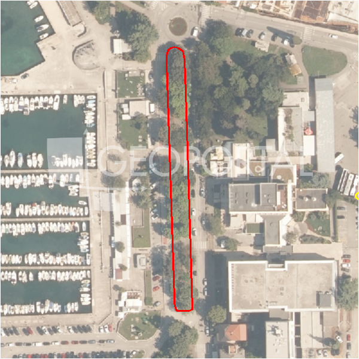

#43383 · Građevinsko zemljište udaljeno 12 km. od Poreča
Poreč, Poreč, Istarska · zemljiste · njuskalo · status active · oglas ↗
Ocjena
- Score
- 60 rule 60 · LLM – · 12.09.2026.
- RLV
- 911.000 € (828 €/m²) · ratio 8,28
- Ukupna investicija
- 2,28 M€
- GBP
- 880 m²
- Feedback
- –
- CRM
- –
Oglas
- Cijena
- 110.000 € (100 €/m²)
- Površina
- 1.100 m² · DKP 1.458 m² (odstupanje 32,5 %)
- Prodavatelj
- agencija · Grem Immobilien
- Prvi put
- 11.09.2026. · zadnje 11.09.2026. · 0 d na tržištu
Povijest cijene
| Datum | Cijena |
|---|---|
| 11.09.2026. | 110.000 € |
Flagovi
zop_70_100 ZOP pojas 70/100 m (−10)area_mismatch DKP površina odstupa > 15 % (−5)
zone_uncertainty zona nije pregledana (reviewed: false) (−5)
zona_iz_oglasa zona preuzeta iz teksta oglasa (bez GIS-a)
llm_pending LLM ekstrakcija/ocjena nedostupna
Komponente score-a
| rlv | {'gbp': 880.0, 'kis': 0.8, 'nkp': 660.0, 'noi': None, 'rlv': 910513.0434782612, 'ratio': 8.277391304347828, 'value': None, 'phases': 1, 'profile': 'obala_visestambeno', 'gdv_neto': 3696000.0, 'cost_soft': 88000.0, 'gdv_bruto': 4620000.0, 'kis_known': False, 'total_inv': 2281400.0, 'cost_build': 1760000.0, 'cost_other': 316800.0, 'cost_sales': 138600.0, 'demolition': False, 'gbp_source': 'kis', 'rlv_per_m2': 827.739130434783, 'parcel_area': 1100.0, 'parcelation': False, 'roi_on_cost': 0.5593056894889104, 'profit_at_ask': 1276000.0, 'cost_demolition': 0.0, 'total_inv_phase': 2281400.0, 'parcel_area_effective': 1100.0, 'sale_price_per_m2_nkp': 7000.0} |
| hard | [] |
| info | ['zona_iz_oglasa', 'llm_pending'] |
| rubric | {'permits': {'max': 5.0, 'detail': {'permit': 'none'}, 'points': 0.0}, 'location': {'max': 15.0, 'detail': {'source': 'rlv.yaml:istra_zapad/row1', 'sale_price_per_m2_nkp': 7000.0}, 'points': 15.0}, 'physical': {'max': 4.0, 'detail': {'slope_pct': 7.97, 'slope_points': 2.0, 'sea_row1_bonus': True}, 'points': 3.0}, 'liquidity': {'max': 3.0, 'detail': {'n_cuts': 0, 'points_cut': 0.0, 'points_days': 0.008333333333333333, 'seller_type': 'agencija', 'points_fresh': 0.5, 'price_cut_pct': None, 'days_on_market': 1, 'points_private': 0}, 'points': 0.51}, 'rlv_ratio': {'max': 25.0, 'detail': {'rlv': 910513, 'ratio': 8.277, 'asking_price': 110000.0}, 'points': 25.0}, 'ticket_fit': {'max': 10.0, 'detail': {'asking_price': 110000.0}, 'points': 3.47}, 'zone_quality': {'max': 8.0, 'detail': {'source': 'oglas', 'zone_class': 'stambeno', 'zone_ideal': True}, 'points': 3.0}, 'profit_potential': {'max': 20.0, 'detail': {'roi_on_cost': 0.559, 'profit_at_ask': 1276000}, 'points': 20.0}, 'price_vs_benchmark': {'max': 10.0, 'detail': {'source': 'auto:Poreč', 'deviation': 0.425, 'ask_eur_m2': 100, 'benchmark_eur_m2': 173.89}, 'points': 10.0}} |
| weights | {'llm': 0.4, 'rule': 0.6, 'model': 0.0} |
| penalties | {'zop_70_100': 10, 'area_mismatch': 5, 'zone_uncertainty': 5} |
| raw_score | 80,0 |
| rlv_notes | ['DKP površina odstupa 33 % → koristi se oglašena'] |
| flag_notes | {'max_gbp': 880, 'zop_band': '70', 'total_inv': 2281400, 'zone_code': 'S', 'zone_class': 'stambeno', 'zone_source': 'oglas', 'zone_reviewed': None, 'area_mismatch_pct': 32.55} |
| caps_applied | [] |
GIS
- Čestica
- k.o. 323748, k.č. 4394 (pin_buffer, 0,64); k.o. 323748, k.č. 4380/2 (pin_buffer, 0,62); k.o. 323748, k.č. 4369 (pin_buffer, 0,59)
- Zona
- S (–)
- kig / kis / katnost
- – / – / –
- GP / UPU
- – · UPU –
- Pristup / nagib
- unknown · 8,0 % (max 12,1 %)
- More
- 40 m · red 1 · ZOP 70
- Zaštite
- Natura ne · zaštićeno ne · kulturno dobro ne
- Zgrade na čestici
- 0 %
- Match
- 0,64
Karta
Ortofoto (DOF)

RLV kalkulacija — pretpostavke
| gbp | {'value': 880.0, 'source': 'kis'} |
| kis | {'value': 0.8, 'source': 'default_profila'} |
| sea_row | {'value': '1', 'source': 'gis'} |
| soft_pct | {'value': 0.05, 'source': 'profil'} |
| nkp_ratio | {'value': 0.75, 'source': 'profil'} |
| cost_other | {'value': 316800.0, 'source': 'profil: doprinosi+uređenje po m² GBP, financiranje+rezerva % gradnje'} |
| parcel_area | {'value': 1100.0, 'source': 'oglas'} |
| asking_price | {'value': 110000.0, 'source': 'oglas'} |
| margin_on_cost | {'value': 0.15, 'source': 'profil'} |
| build_cost_per_m2_gbp | {'value': 2000.0, 'source': 'profil'} |
| sale_price_per_m2_nkp | {'value': 7000.0, 'source': 'rlv.yaml:istra_zapad/row1'} |
| transfer_tax_and_acquisition | {'value': 0.06, 'source': 'profil'} |
Ekstrakcija iz oglasa
| utilities | ['struja', 'voda'] |
| zone_claim | S |
| sea_distance_m_claim | 12000.0 |
Benchmarks mikrolokacije
| Vrsta | Vrijednost | n | Od | Izvor |
|---|---|---|---|---|
| land_ask_eur_m2 | 174 | 302 | 11.09.2026. | auto |
| newbuild_sale_eur_m2_nkp | 3.695 | 8 | 11.09.2026. | auto |
Opis oglasa
Građevinsko Zemljiste od cca 1.100m2 zadnje u građevinskoj zoni. Put, voda i struja do parcele. Udaljeno 12 km od mora. Lijepo okruženje . Idealno za gradnju vile sa bazenom. Parcela je u fazi cijepanja . 1)Veliĉina građevne ĉestice, određena u skladu sa ĉlankom 55. ovih odredbi, mora zadovoljavati sljedeće uvjete (najveća površina građevne ĉestice ne određuje se, dok je najmanja površina građevne ĉestice kako slijedi): - kod građevina stambene namjene: - jednoobiteljskih i obiteljskih građevina: - slobodnostojeće građevine: - najmanje 600 m2 - poluugrađene građevine: - najmanje 450 m - ugrađene građevine: - najmanje 350 m2 -kod višeobiteljskih građevina: - slobodnostojeće građevine: - najmanje 750 m2 - poluugrađene građevine: - najmanje 600 m2 IZGRAĐENOST - slobodnostojeće građevine: - za ĉestice površine od 600 – 800 m 2 - 40 % površine građevne ĉestice, ali ne više od 240 m2 - za građevne ĉestice površine veće od 800-1200 m 2 - zbir 240 m 2 i 25% površine građevne ĉestice iznad 800 m 2 - za građevne ĉestice površine veće od 1200 m 2 - 420 m (1) Najviša dozvoljena visina te najveći broj nadzemnih etaža građevina iznose: - kod građevina stambene namjene: - jednoobiteljske, obiteljske i višeobiteljske građevine: - najviše 9 m uz najviše 3 nadzemne etaže. Za više informacija: Korado Meštrović Tel: +385 98 1690882 Email: grem@pu.t-com.hr ID NEKRETNINE: iro-1365